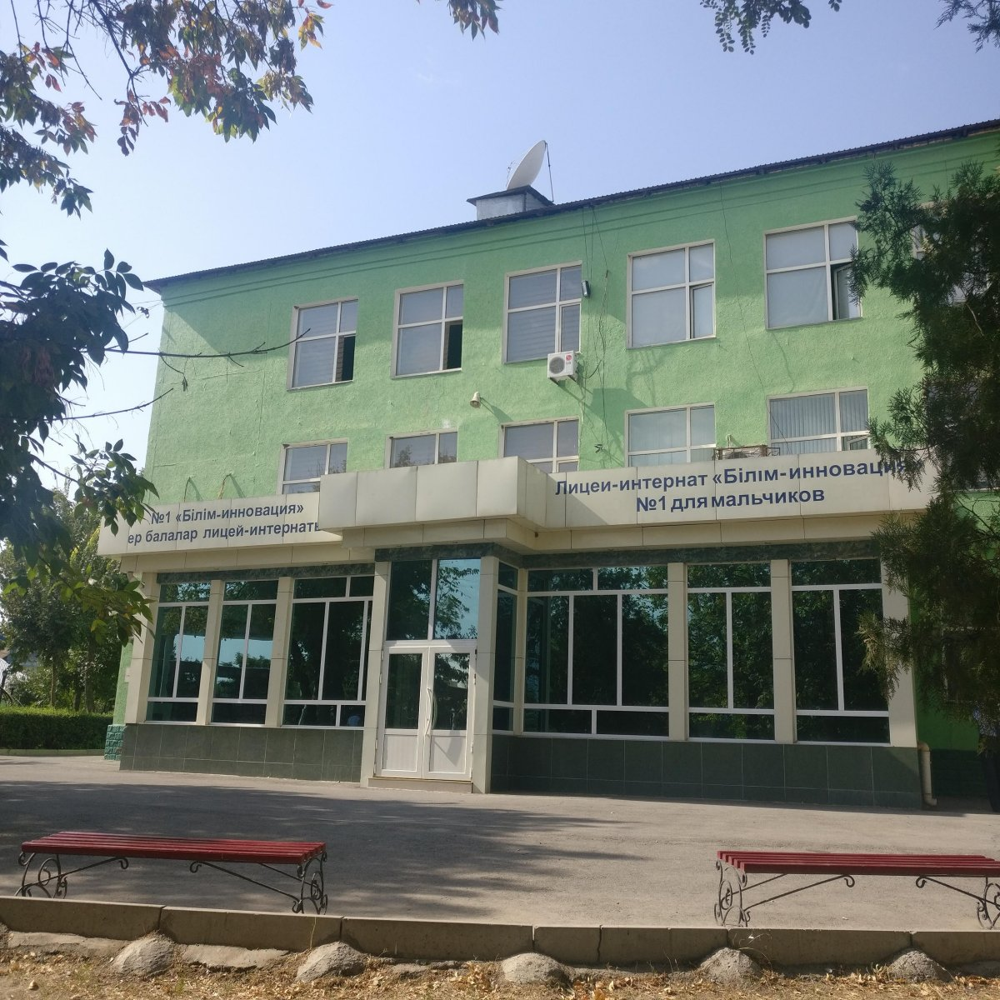
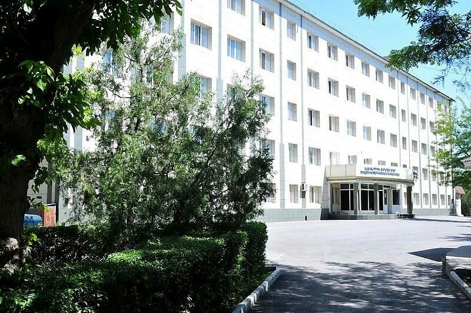
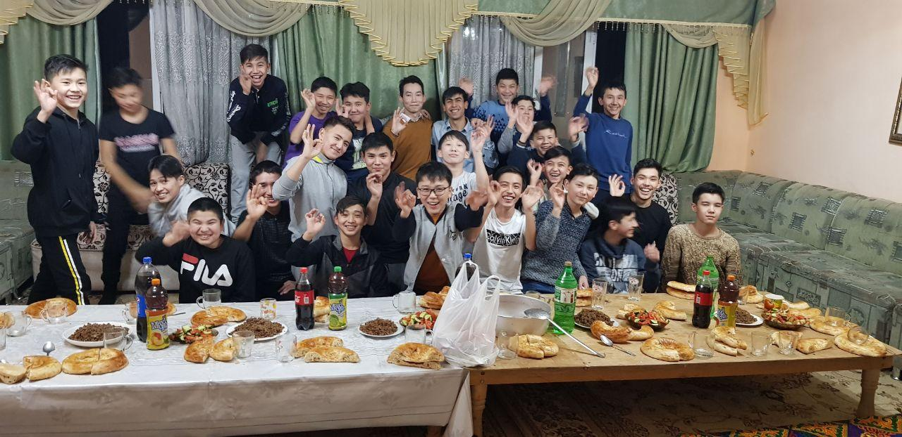
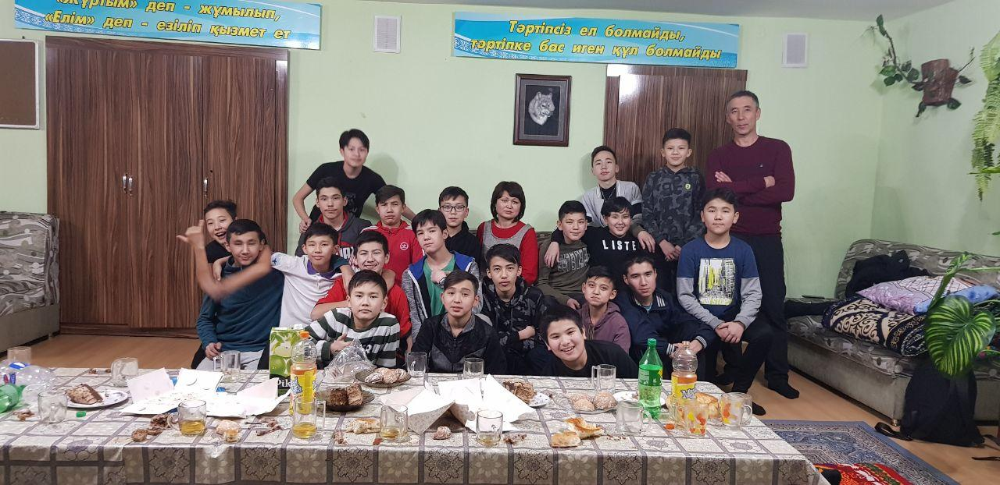
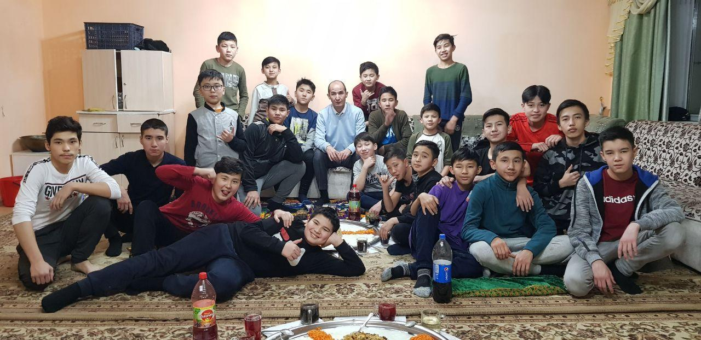

Біз №1 Білім-Инновация лицейінің оқушыларымыз. Қазіргі уақытты 9С сыныппыз. Осы керемет жерге 2018 жылдың қыркүйегінде оқушы ретінде келдік. Біздің сыныпта 25 оқушы 1 тәрбиеші (@rakhimov.myrzabek) және 1 жетекшіміз (@beknur27) бар. Толығырақ біздің инстаграм парақшамызда көре аласыз. Біздің парақшамызға өту үшін үстіндегі суретті немесе жазуды басыңыз.
 
«Bilim-Innovation» лицейлері - «KATEV» Халықаралық қоғамдық қорының басшылығымен Қазақстандағы ерекше дарынды балаларға арналған мектептер желісі. KTL (BIL) студенттерінің 4000-ға жуығы халықаралық интеллектуалды олимпиадалардың жеңімпаздары мен жүлдегерлері болды.Лицейлер төрт тілде білім береді: қазақ, орыс, түрік және ағылшын. Лицейлер ұлдар лицелері, қыздар лицейлері және бірлескен лицейлер болып бөлінеді.
Активити - бұл сыныппен бірге жасаған кіші мейрамымыз. Ол әр түрлі бола алады. Мысалға, сыныппен футбол, тәрбие сағаты. Біздің Тәрбие сағатымызды жетекшіміз немесе тәрбиешіміз өткізеді. Сол кезде олар бізге тәрбие бере отыра, тамақ жейміз. Себебі, бір үстелден жеген тамағымыз бізді бауырмашыл қылады.
  